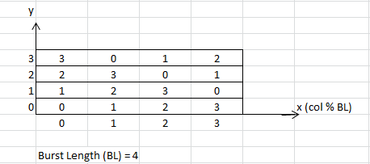

Accessing burst data
When you read or write burst data of burst length, your program should take care of all possibilities of the burst orders.
These burst orders relate to:
- Burst type: Either sequential mode or interleave mode.
- Where the first accessed data starts from: an even multiple of the burst length, or not an even multiple.
Without MTL arrays, it is difficult to create such programs.
MTL arrays provide a solution to cover all burst orders for a burst type using a simple loop-based algorithm:
- Create a burst order table as a two-dimensional array that contains all burst orders for a
desired burst length (BL) and burst type.
- The table size is (BL*BL).
- The x-axis represents different burst starts within a burst length, and is from 0 to (BL - 1).
- The y-axis represents the sequential order from 0 to (BL - 1).
- Every column starting from y(0) to y(BL - 1) stores one burst order which begins with its
x-axis value.
That is, y(0) stores the x-axis value.
- The table elements store the positions in the burst length, 0 is the first position, (BL -
1) is the last position. So the elements' values also are 0, 1, 2, 3, ..., (BL - 1).
The burst length maps to any group which is from (an even multiple of burst length + 0) to (an even multiple of burst length + (BL - 1)).
For example, for BL = 4, sequential mode, the burst order table is:

- For a given burst start address, you need find the burst order from this table. (The burst
start address, for example, is controlled by col).
This is the same as finding a column in the table which contains this burst order.
- Find the column whose x-axis value is (col % BL).
- Loop from y(0) to y(BL - 1) for this column, you get the burst order for writing or
reading a group of data.
Since each element of this order is the relative position to an even multiple of burst length, the element can also be represented by the name relAddri.
relAddri
= burstOrderAddr[col % BL][i] //burstOrderAddr is the burst order table name, i is from 0 to (BL - 1). - Calculate the real burst addresses by adding the burst order found in step 2 to the
associated even multiple of the burst length.
The associated even multiple of the burst length is (col - col % BL).
So each burst address can be expressed by effColi:
effColi
= (col - col % BL) + relAddri //i is from 0 to (BL - 1) - Read data from, or write data to, the burst addresses which are from
effCol(i=0) to effCol(i= BL-1) sequentially calculated
in step 3.
The data used to be compared or writing for each burst address, expressed by dffDWi, are from dffDW(i=0) to dffDW(i=0) sequentially. The data need also follow the burst order got from step 2.
dffDWi
= burstOrderData[relAddri] //i is from 0 to (BL - 1)Note MTL does not support the mod operator (%), see Operators. But for burst lengths which are power of two, the mod operation can be easily achieved by bit-wise & (AND).
For example:
- If BL =4, (col % BL) is equal to (col % 4). In MTL, it will be achieved by doing (col & 0x3).
- If BL =8, (col % BL) is equal to (col % 8). In MTL, it will be achieved by doing (col & 0x7).
Example
For a burst length = 4, sequential burst mode device, write data "Data[4] = {15, 16, 17, 18}" to device starting from address col = 5.
- Create a burst order table like above.
- Find the burst order from finding the column whose x-axis value is (5 % 4 = 1). Note that
this mod equation is achieved by (0x101 & 0x011 = 0x001) in MTL.
So from the column (x = 1), loop from y(0) to y(3) to get the burst order, which is "1, 2, 3, 0" sequentially.
Accordingly, the (relAddri, i from 0 to 3) are "1, 2, 3, 0".
- Calculate the burst address using "effColi
= (col - col % BL) + relAddri //i is from 0 to (BL - 1)"So the burst addresses are (5 - 5 % 4 + 1), (5 - 5 % 4 + 2), (5 - 5 % 4 + 3), (5 - 5 % 4 + 0): "5, 6, 7, 4" sequentially.
- Write data to the addresses "5, 6, 7, 4" sequentially.
The data used for writing are "Data[4] = {15, 16, 17, 18}", which must also follow the burst order found in step 2. So the data to be written to addresses "5, 6, 7, 4" are Data[1], Data[2], Data[3], Data[0] accordingly, which are 16, 17, 18, 15.
Functional changes
- Introduced in MTP 3.1.4